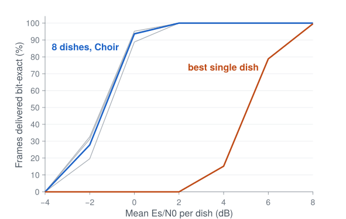
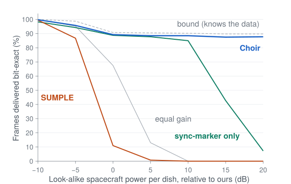
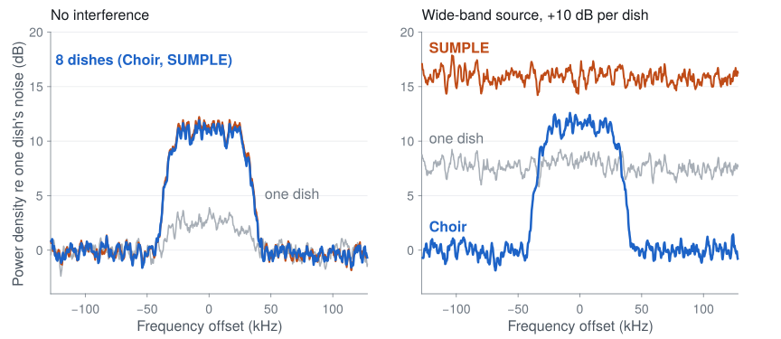
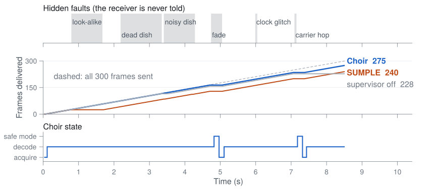
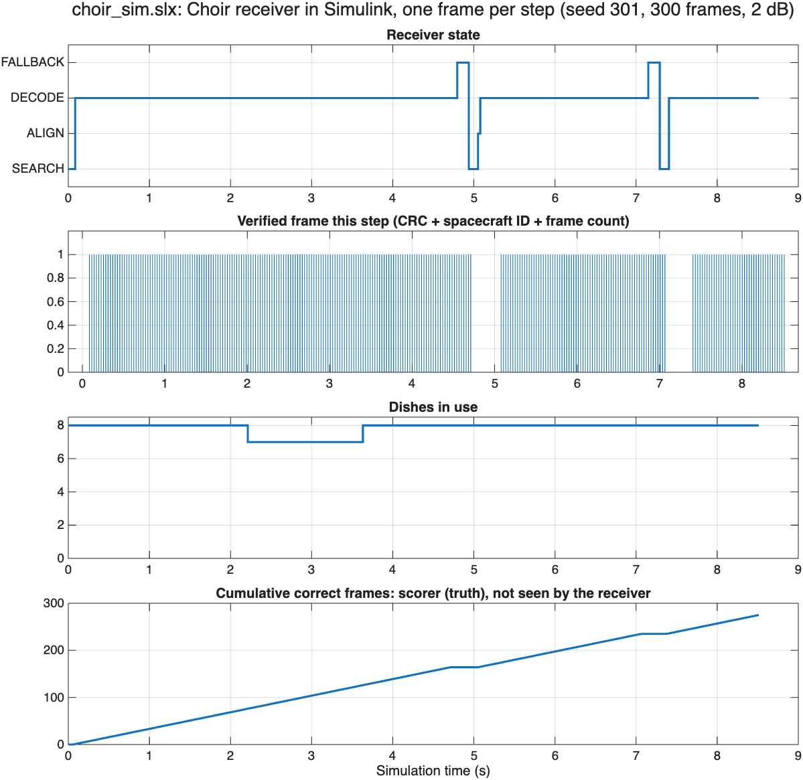

An autonomous 8-dish receiver in MATLAB that learns which dishes to trust only from verified frames. Real NASA Curiosity (MSL) telemetry through a simulated radio link; JPL's blind SUMPLE method keeps 0%.
MATLAB in Space Hackathon, Track 1: Deep-Space Communication & Signal Intelligence. Northeastern University, 3 October 2026
| Part | What we built | What it shows |
|---|---|---|
| Track 1 brief | Find, clean and decode weak radio signals with no human tuning | Asked for: filter, acquire or re-acquire, decoded telemetry, before/after spectra |
| Software: ChoirMATLAB R2026b | Real NASA Curiosity (MSL) telemetry in CCSDS frames, sent to 8 simulated dishes with hidden faults. Dish weights are learned only from frames that pass the CRC, carry our spacecraft ID and continue the frame countTelemetry is real; the radio link is simulated (no benchmark radio clips used) | Measured results on the next slides |
| Hardware: Choir on a breadboardRaspberry Pi Pico | 3 LEDs take turns sending the same Morse frame (sync, ID C, counter, MATLAB, checksum) to one photoresistor. Each round a hidden fault garbles one LED, corrupts its payload, or puts a look-alike frame on 2 of 3 | Live: raw vs filtered light signal, majority vote vs Choir's checks, decoded message in the terminal |
| Choir swarmteammate | Several spacecraft relay the same signal to one dish | Last slide |

| State | What Choir does | Moves on when |
|---|---|---|
| SEARCH | Squares the BPSK signal so the carrier shows as a tone; sums spectra over all 8 dishes | A peak stands 12× above the median |
| ALIGN | Finds the sync marker over one frame period on every dish: frame timing and per-dish delayFrames from another spacecraft ID are rejected | A frame passes all three checks |
| DECODE | Weights w = Q−1h. h is learned only from frames with a valid CRC, our spacecraft ID 42 and the next frame count; Q is everything else the dishes hearA dish that stops matching verified frames is re-timed or excluded | 3 bad frames in a row |
| FALLBACK | Re-times every dish on the sync marker; equal weights | A frame verifies, or 8 bad frames send it back to SEARCH |



| Hidden fault (truth) | Frame | Choir's log entry | Delay |
|---|---|---|---|
| Look-alike spacecraft, +10 dB | 29 | Strong extra source reaches 8 dishes (21 dB over noise); weights now cancel it | 0 |
| Dish 2 dead | 78 | Dish 2 stopped matching verified frames (fit 0.80 to 0.01): excluded | 1 |
| Dish 6 noise ×10 | 121 | Dish 6 is 9 dB noisier than the floor; its weight drops | 0 |
| Fade, all dishes, −30 dB | 168 | 3 bad frames in a row: every dish re-timed on the sync marker | 2 |
| Clock glitch, dish 1, −12 samples | 212 | Dish 1 stopped matching verified frames; timing moved −12 samples | 0 |
| Carrier hop, +1363 Hz | 251 | 3 bad frames in a row: safe mode, then carrier found at +1440.5 Hz | 2 |

| Limit | Measured effect | Next step |
|---|---|---|
| Look-alike from the same direction | Seed 304, similarity 0.81 (others 0.16–0.58): every receiver fails, even the bound that knows the data | Separate by frequency or code, not by dishes |
| No interference, weak signal | Choir 27.8% vs SUMPLE 32.6% at −2 dB per dish | Its gain is robustness, not sensitivity |
| Simulated radio link | Telemetry is real NASA MSL; dishes, noise and faults are simulated | Real multi-station recordings |
| Uncoded BPSK | One dish needs about 8 dB; LDPC or turbo codes need several dB less | Add coding; receiver logic unchanged |